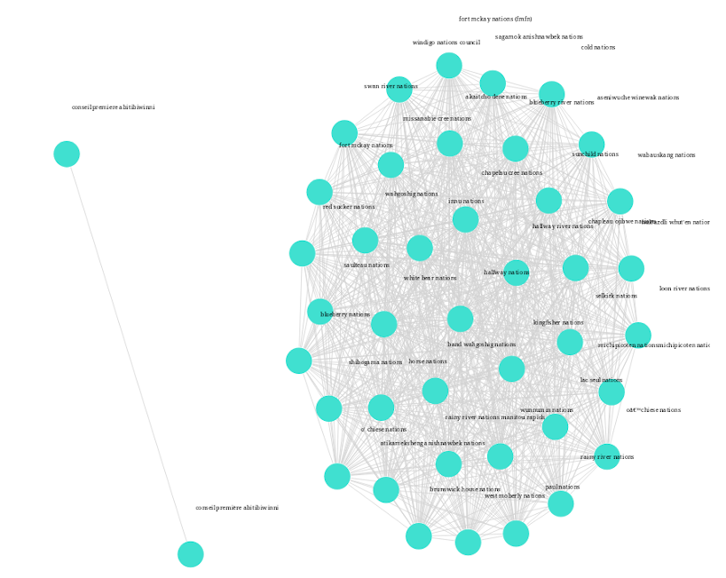

Données ouvertes sur les paiements pétroliers, gaziers et miniers
Le Extractif La Loi sur les mesures de transparence sectorielle aide le gouvernement du Canada à dissuader corruption dans le secteur extractif. Entités extractives — pétrole, gaz et les entreprises minières — qui sont actives au Canada doivent divulguer publiquement certains types de paiements versés à des gouvernements au Canada et à l'étranger.

Pays:

Rapports:
Bénéficiaires:

Total:
Paiements par cycle de rapport
Tableau croisé dynamique en ligne
Plus de façons d'explorer
Frappez les microdonnées
- Afficher et filtrer toutes les données dans votre navigateur
- Naviguer entre les différentes versions
- Télécharger les résultats dans divers formats
Améliorez votre analyse avec l'EAA!
- Utilisez des outils puissants pour créer de nouvelles informations
- Travailler avec vos données en R, Python ou Julia
- Commencez en quelques secondes avec Kubeflow
Bloc-notes prêts à l'emploi
Regroupement de mots et déduplication

Filtrer, regrouper et tracer les étiquettes payee_project_name, dans l'ordre
pour identifier la proximité ou les doublons. Plus de 700 doublons identifiés !
Écrit en Julia.
Regroupement par pays et entité
Analyse et trace la distribution de la contribution au paiement par centile et identifie les entités qui effectuent la majorité des paiements. Écrit en R.
Paiements par entité et catégorie
Un tableau croisé dynamique dans Plotly pour examiner les montants et les types de paiements les entités font chaque année. Utilise Pandas pour les trames de données. Écrit en Python.
Données internationales (tiers)
Projets de ressources est un portail de données ouvertes publié par le Natural Resource Governance Institute. Il fournit des informations sur les paiements effectués aux gouvernements par les entreprises qui extraient du pétrole, du gaz et des ressources minérales dans le monde entier. Cette interactive le site Web comprend la LMTSE des données qui ont été agrégées avec des données générées par l'Union européenne et Espace économique européen.
Une note sur les informations de tiers
Le gouvernement du Canada n'est pas responsable de l'exactitude, la fiabilité ou l'actualité des informations fournies par des sources. Le contenu fourni par des sources externes n'est pas soumis à des les exigences en matière de langues, de confidentialité ou d'accessibilité.
Signaler un problème sur cette page
- Date de modification :